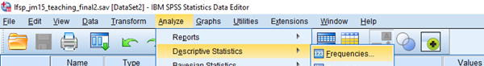

Explore distributions of single variables
Exercises developed by Jen Buckley
Now, in this exercise you can start examining variables in the dataset.
You can explore values or distributions of a single variable using univariate descriptive statistics (note: ‘uni’ indicates one). A variable’s level of measurement determines which statistical techniques are appropriate to use. (Note: you can find a Recap: Three levels of measurement at the end of this page).
Learning outcomes
The learning outcomes of this section are:
Understand how to obtain frequency tables, measures of central tendency and dispersion.
Select methods appropriate for different levels of measurement of data.
Create a frequency table
A frequency table:
is a simple way to look at the values of a variable for a nominal or ordinal variable.
gives the number of cases in each category; SPSS also provides percentages.
Task: Produce a frequency table for the variable measuring self-rated health
In the SPSS, menus:
- Select Analyze > Descriptive statistics > Frequencies

This will open the Frequencies Dialogue box.
Here, you need to select the variable you want to analyse by clicking on the variable in the list. Find the variable QHealthr.
Tip - Are you seeing a list of variable names or labels?
You can choose whether to see variable names or labels in dialogue boxes. To change what you see, click on any variable in the list. It is often easier to search variable names.
The output
Once you have selected your variable, click ‘ok’ and SPSS will print the result in a separate ‘output’ file.
Review your results:
What percentage (to the nearest whole number) indicate their health is Very good?
How many missing cases do we have?
About 37 percent
4
Charts and Statistics
In the Frequencies dialogue box, you can select:
Statistics: which allows you to calculate the mean, median, mode or others.
Charts: which allows you to create bar charts, pie charts or histograms.
Histogram and descriptive statistics
We are now going to get some descriptive statistics for the variable MCZ_11 ‘Overall, how satisfied are you with your work situation?’
Select Analyze > Descriptive statistics > Frequencies
Statistics > Mean and Median
Charts > Histogram
In the main dialogue box, untick ‘Display frequency tables under’ the list of variable names (see picture below)
The variable asks people to score their wellbeing on a scale on 0 to 10. What is the mean score?
Complete the sentence “Half the cases give a value of ___or higher”.
6.48
“Half the cases give a value of 7 or higher”. The variable has a median of 7.
Independent task: explore other variables
Now select another variable to explore using the Frequencies menu.
Once you have some output, copy a chart or table to a slide. Add a sentence to describe the data.
Can you work out how to improve the appearance of output?
Recap: Three levels of measurement
Categorical variables can be nominal or ordinal:
Nominal variables are categorical variables that have no order between values, variables such as gender, ethnicity etc.
Ordinal variables are like categorical variables but there is an order to the categories as one category could be assumed to be higher or lower than another category such as level of educational qualification (e.g. none, high school, post-high-school, university).
Univariate techniques for nominal or ordinal level variables include:
tables with the frequency or percentage of cases in each category or level.
bar charts
Interval variables (also known as ‘scale’ or ‘continuous’ or ‘cardinal’ variables) are variables where there is an order between each increasing value (e.g. 2 is higher than 1) and the interval between the different points on the scale are of identical size. Common examples include pay (in pounds) or working time (in hours). For example, for time, the gap between 1 hour and 2 hours is 1 hour, as is the gap between 10 hours and 11 hours, thus the intervals are identical across the scale.
Univariate techniques for continuous variables include:
histograms,
measures of central tendency (e.g. mean, median or mode),
and measures of dispersion (e.g. standard deviation, variance, standard error, interquartile range.